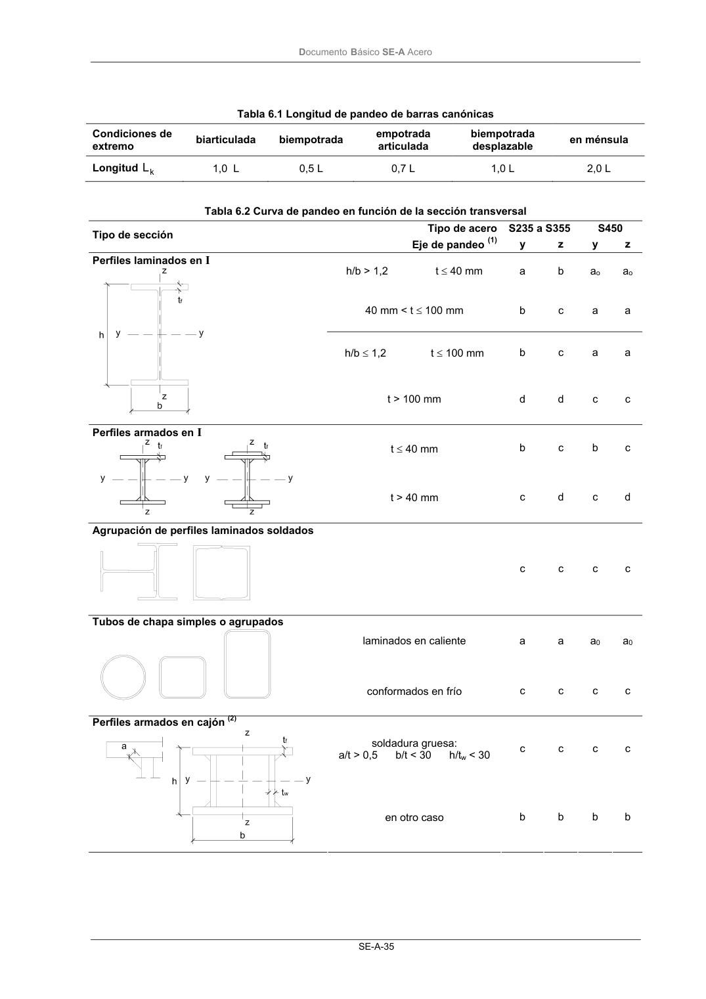

DB-SE-A · Página 37 · versión 2007-10-23
SHA256: 9ed9ea694aabfbda3bfbbef40dfe9223fde05d13c35bc2ba9751e5a96a22a64f · página física 37 de 168 · métodos de encabezado
solo si están cotejados.
Formatos: Markdown · JSON de bloques · PDF p. 37 · imagen PNG
Documento Básico SE-A Acero SE-A-35 Tabla 6.1 Longitud de pandeo de barras canónicas Condiciones de extremo biarticulada biempotrada empotrada articulada biempotrada desplazable en ménsula Longitud k L 1,0 L 0,5 L 0,7 L 1,0 L 2,0 L Tabla 6.2 Curva de pandeo en función de la sección transversal Tipo de acero S235 a S355 S450 Tipo de sección Eje de pandeo (1) y z y z h/b > 1,2 t ≤ 40 mm a b ao ao 40 mm < t ≤ 100 mm b c a a h/b ≤ 1,2 t ≤ 100 mm b c a a Perfiles laminados en I t > 100 mm d d c c t ≤ 40 mm b c b c Perfiles armados en I t > 40 mm c d c d Agrupación de perfiles laminados soldados c c c c laminados en caliente a a a0 a0 Tubos de chapa simples o agrupados conformados en frío c c c c soldadura gruesa: a/t > 0,5 b/t < 30 h/tw < 30 c c c c Perfiles armados en cajón (2) en otro caso b b b b
